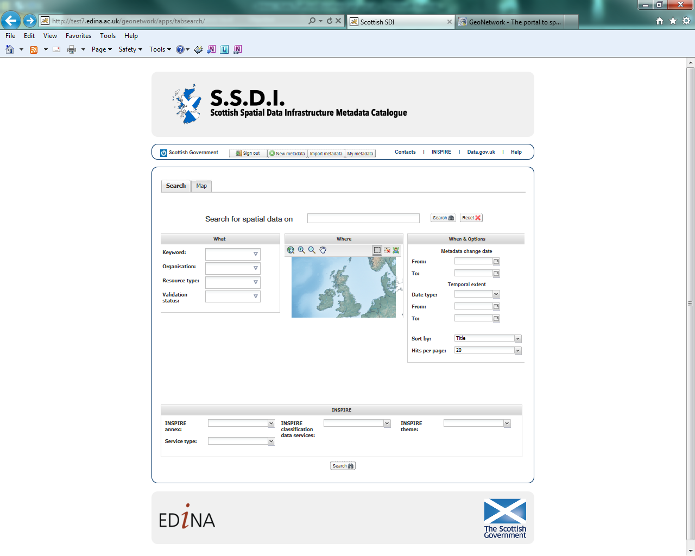
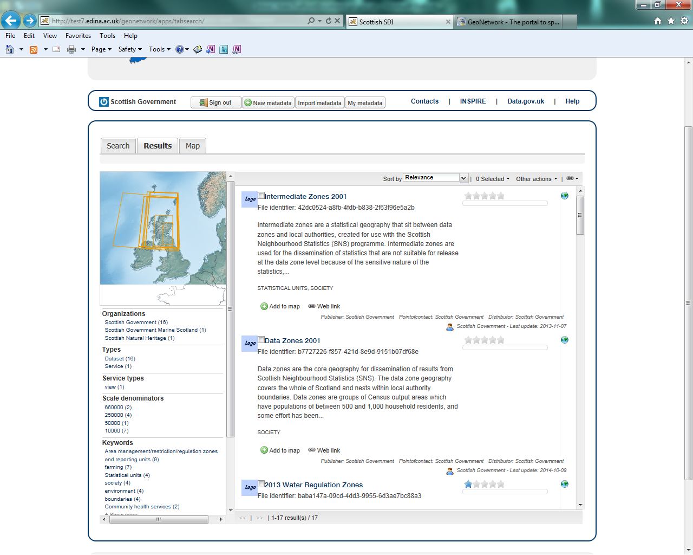

Contents¶
2.1 The Scottish SDI Metadata Catalogue (SSDI) 3
2.2 Scottish marine data in the SSDI 3
2.3 SSDI metadata requirements 3
2.4 Where to obtain more information on INSPIRE 4
3 General Introduction to the SSDI 5
3.2 Searching for metadata in the SSDI 6
3.3 Viewing metadata records on the SSDI 7
4 Viewing Spatial Data on the SSDI 9
4.1 Adding services to the main interactive map 9
4.2 Using the main interactive map 10
5 Adding Discovery Metadata to the SSDI 13
5.1 Creating dataset and service metadata from a template 14
5.2 Uploading metadata from an existing XML file 16
5.3 Saving and validating metadata 17
5.4 Publishing a metadata record 18
5.6 Editing and deleting a metadata record 19
5.7 How to create Related Resources 20
6.1 How to define INSPIRE compliant data in the SSDI 21
6.2 Metadata element definition 21
Introduction¶
The Scottish SDI Metadata Catalogue (SSDI)¶
The Scottish SDI Metadata Catalogue (SSDI) underpins the coordinated and regulated publishing of Scottish public sector spatial data to the INSPIRE and UK Location specified standards. It provides the discovery component for a set of on-line services that will allow users to evaluate and use public sector spatial data.
If you have any questions regarding the SSDI please contact:
Kate Trafford
GIS Analyst, Geographic Information Science & Analysis Team
Scottish Government
This guide sets out detailed guidance on the creation, publishing and maintenance of INSPIRE discovery metadata. It covers both spatial data being published under INSPIRE and all other spatial data published through the SSDI. The SSDI feeds into the UK public data publishing platform data.gov.uk.
Harvest of the metadata in the SSDI to the data.gov.uk site is currently unscheduled, but performed on a weekly basis. Users should contact Kate.Trafford@scotland.gsi.gov.uk if any urgent updates or deletions are required.
Scottish marine data in the SSDI¶
MEDIN is another format for metadata that relates to marine data and was created for a domain specific purpose. The format of metadata held in the SSDI is sufficient for MEDIN purposes, the additional metadata elements included in MEDIN remain once the metadata has been added to the SSDI). MEDIN metadata can be thought of as a superset of the information held in the SSDI.
The SSDI and data.gov.uk can use MEDIN records (which come as slight but valid and complete supersets of Gemini 2.2 records). It is recommended that for Marine datasets that have metadata in MEDIN format, Scottish organisations should provide the appropriate metadata to both the SSDI and the MEDIN portal.
SSDI metadata requirements¶
If you publish spatial data on the SSDI then the following **operational commitments** must be followed:
- You will endeavour to adopt a process of continuous improvement for the resources you publish, based on the feedback you receive.
- You will maintain your discovery metadata:
- assuring its quality against appropriate standards
- reviewing it, updating it regularly, and ensuring it is updated when new versions of data, data series or on-line services are published.
- maintaining metadata File Identifiers (UUID) throughout the life of the metadata resource (new UUIDs should only be created when new resources are published, to prevent duplicate metadata resources).
If you publish on the SSDI then the following **service commitments** must be followed:
- For all data:
- compliance with the INSPIRE Metadata Regulation and the UK Location operational requirements, as set out in this guide.
- if publishing INSPIRE Network Services, compliance with the INSPIRE Network Services Regulation.
- the publishing of INSPIRE View Services for a given dataset or data series.
- For data that comes under an INSPIRE Theme and contains features
listed in the INSPIRE Data Specifications:
- legal compliance with the INSPIRE Directive
Where to obtain more information on INSPIRE¶
The latest information, and additional resources, can be obtained by visiting the UK Location web site. If you would like to contact the UK Location Coordination Unit, please use the contact form at:
http://data.gov.uk/location/contact_points
Further information on INSPIRE is also circulated on Knowledge Hub, within the Scottish SDI Strategy Group, SDI/Inspire forum. The Scottish Government has also published guidance on the delivery of Inspire conformant web map services. The first instalment of this guidance can be accessed at:
General Introduction to the SSDI¶
Accessing the SSDI¶
The Scottish SDI Metadata catalogue can be accessed from the following link:
http://scotgovsdi.edina.ac.uk/srv/en/main.home
The main page consists of three panels: the header section (1), the main search panel (2) and the INSPIRE search panel (3).

Figure 3.1.1: SSDI catalogue main page
Along the header section there is a login button on the left and links to Contacts, INSPIRE, Data.gov.uk and Help to the right. Once a user has logged in, they will be presented with further buttons for Sign Out, New Metadata, Import Metadata, and My Metadata.
Contacts allow users to leave feedback on or comments about the site. Though if users have any specific issues around login and passwords then they should contact Kate Trafford (Kate.Trafford@scotland.gsi.gov.uk) directly.
Searching for metadata in the SSDI¶
Quick searches on the SSDI can be performed using the free text box at the top centre of the search panel and clicking the ‘Search’ button. One of the main functions of the site is to allow users to search for both dataset and service metadata. There are two predefined searches for ‘*Datasets*’ or ‘*Services*’, accessed from a drop down list under the heading ‘*What*’ on the left-hand side of the main search panel. Users can also search by organisation and keyword here. Note that keyword entries in the drop down list are generated from values in the keyword element of existing metadata records.

Figure 3.2.1: SSDI catalogue search options
Other search options are available under the ‘*Where*’ and ‘*When*’ headings, and also the INSPIRE search panel at the bottom. Each section can be used to limit a user’s search criteria as follows:
- What – allows users to search by Keywords, Organisation, and Resource type.
- Where – the map tool allows users to draw a bounding box to restrict their search.
- When – allows users to limit the search temporally based on the metadata change date or the temporal extent of the data. Note that this section also provides options for sorting of results.
- INSPIRE Search options – allows users to limit their search by Annex, Service Type, Classification and Theme. Drop down boxes or check lists provide the various options available.
Clicking on the ‘Search’ button will run a search based on the users selected options. To clear search options, hit the ‘Reset’ button.
Viewing metadata records on the SSDI¶
Once a search has been performed, users will be presented with a ‘Result’ tab.

Figure 3.3.2: SSDI Results tab
Options to sort by title, relevance, date of change, rating, popularity, and scale are available on the top right of the results window. Users can also select records and perform a series of actions such as export, add the layer to the map, update or delete.
On the left-hand side of the results tab is a map that displays the extent of each record in the search result list. Below this are options to filter search results by organisation, resource type, service type, scale, keywords, and year.
Viewing Spatial Data on the SSDI¶
Adding services to the main interactive map¶
Another function of the site is to allow users to view spatial data as Web Mapping Services (WMS) in the interactive map client. The viewing function can be accessed in two ways:
When viewing search results, click on the ‘Add to map’ button available at the bottom of the record. This will bring the map tab into view, and a dialog box with the URL for the WMS will already be entered. In the folder list the name of the WMS will appear, and the view can be expanded to see all available layers. Click on the layer you wish to add to the map and then click the ‘Add’ button at the bottom right of the dialog box.
- OR -
- If you know the URL of the service you wish to view, activate the map tab and then click on the add layer button (left-most button at the top of the map table of contents). Select the radio button to ‘add by URL’, paste the URL into the text box and hit the ‘connect’ button. As above, the chosen service will appear in the folder list and layers can be added via the ‘Add’ button.

Figure 4.1.1: Adding a resource to the interactive map
Some services will contain multiple layers (e.g. Scottish Government or SEPA services), others only one. To see the layer in the main map click on the Add button in the bottom right of the pop up box. Close the pop up box and the layer will be visible on the map in the main window. Not all layers will appear automatically in the map, depending on the scale they are set to be visible at, some will only appear when you have zoomed in. Users can add as many layers to the main map as required.

Figure 4.1.2: The Data Zone layer from the Scottish Government’s Statistical Units WMS added to the map
Using the main interactive map¶
On the left hand side of the interactive map tab is the table of contents (see section 1 on figure 4.2.1). Across the top are several tools. Reading from left to right these are: Add WMS, Remove layer, Layer styles, Metadata, and WMS time. With the exception of the add layer tool, these tools require that you have an active layer identified. You can make a layer active by clicking on it, only one layer may be active at a time. The tool functions are described below:

- Add WMS – Add a service (or layer within a service) if you already know the URL.
- Remove Layer – activate the layer to be removed then click on this button.
- Layer Styles – Not available for all WMS layers.
- Metadata – provides details on the active WMS service.
- WMS Time – Not available for all WMS layers.
By clicking the button beside ‘Layer manager’ in the table of contents, users can expand or collapse the TOC view. Clicking the arrow buttons at the top left or middle of the right-hand side of the table of contents, users can expand or collapse the map view.
Layers can be turned on and off by checking or unchecking the tick box beside the layer name. Opacity can also be modified using the slide bar underneath the layer name.
There are also a range of mapping tools available across the top of the interactive map (see section 2 on figure 4.2.1). The functions of each tool, again as read from left to right are described below:
- Full Extent – Click this button to go to the full extent of the map.
- Zoom In/Zoom Out – Use these buttons to zoom in or out of the map, by either clicking once or drawing a box.
- Pan Map – Use this button to move the map. Click and hold the left mouse button to move the map.
- Feature Information – This button returns information about features shown on the map.
- Previous/Next Extent – Use these button to return to the previous map extent or go to the next map extent.
Adding Discovery Metadata to the SSDI¶
This section guides you through the process of adding new metadata records into the SSDI catalogue using either the online metadata editor or the metadata insert tool, based on XML documents. To add or edit data and metadata, you must be registered as an Editor in the SSDI catalogue. Contact Kate Trafford (Kate.Trafford@scotland.gsi.gov.uk) if you would like to become a registered editor for the SSDI.
To produce a good metadata record, always try to gather as much details as possible on the resource that you want to describe, taking into account the metadata elements that are explained in the next section (Metadata Elements). The next step is to properly fill out the fields provided by the metadata template, while at the same time avoiding duplication of information throughout the form.
The table below indicates the mandatory and optional fields according to the UK Gemini 2.2 standard.
Table 5.0.1: Mandatory and optional information for dataset metadata
| *Mandatory Fields* | *Optional Fields* |
|---|---|
Title Abstract Unique Resource Identifier Dataset Language Resource Locator (Online Resource) Spatial Reference System Topic Category Keyword Bounding Box Temporal Extent Dataset Reference Date Frequency of Update Spatial Resolution Lineage Use Constraints Limitations on Public Access Responsible Organisation Metadata Point of Contact Metadata Date Metadata Language Resource Type |
Alternative Title Additional Information Source Geographic Location/Extent Vertical Extent Equivalent Scale Data Format Data Quality (Conformity) |
To edit or import metadata records, you must be logged in. To log on to the metadata tool, go to the top left-hand corner of the header section. Here you can enter the system credentials provided by the system administrator and then click the ‘Sign In’ button. You are now logged on and the ‘Sign Out’ button will now be visible, along with buttons for new, import and my metadata.


Figure 4.2.1: Enter login credentials to sign in to the SSDI
Creating dataset and service metadata from a template¶
To add dataset or service metadata to the SSDI, click on the ‘*New Metadata*’ button. You wil be presented with a list of templates – one UKLP template for ‘Datasets’ and one for ‘Services’. Select the appropriate template based on the type of resource that is being documented. At the bottom of the popup box, select the group the record is to be added to (for all but site administrators, there will only be one choice here). Then click on the ‘Create’ button.
Users can then enter UK Gemini 2.2 compliant metadata in the form provided. More help on the various meanings of the metadata elements can be found in the next section (Metadata Elements).

Figure 5.1.1: Blank dataset metadata template form
Note that the templates for dataset and service metadata are slightly different. Metadata for a service has extra elements for the spatial data service type (i.e. view, download, etc.) and for coupled resources.
The templates have a where you can add an element or another
occurrence of an element (or section). For example, you could have a
range of Alternative Titles. Where an  appears, you can delete
the associated metadata element or section.
appears, you can delete
the associated metadata element or section.
The arrows ( or
or  ) allow you to move that section up or
down the document order. Note that Gemini 2.2 is not concerned with the
order that sections appear in.
) allow you to move that section up or
down the document order. Note that Gemini 2.2 is not concerned with the
order that sections appear in.
Mandatory fields (e.g. Abstract) that are empty are outlined in red. Note that for sub-elements, this only indicates that the sub-element is mandatory within its context. For example, the Vertical Extent is an optional element, but if you have one, then the minimum and maximum values are mandatory.
The binoculars ( ) allow you to add information from a
pre-existing dictionary. For example, if you click on the binoculars
beside the Keywords section a pop up box will appear. This contains a
drop down list (top left) with the various thesaurus’ available. The
thesaurus choices available for the Keyword element are INSPIRE theme or
Regions. There is also a thesaurus available for coordinate reference
systems.
) allow you to add information from a
pre-existing dictionary. For example, if you click on the binoculars
beside the Keywords section a pop up box will appear. This contains a
drop down list (top left) with the various thesaurus’ available. The
thesaurus choices available for the Keyword element are INSPIRE theme or
Regions. There is also a thesaurus available for coordinate reference
systems.
Select the appropriate thesaurus and then click on any of key words below. Using the arrows in the middle of the pop up box, add your selection to the Selected keywords list and when finished click ‘add’ at bottom of the menu to add them to them all to your metadata.

Figure 5.1.2: Inspire theme thesaurus
For some sections, where there is likely to be a range of commonly used values, a ‘suggestion’ drop down list is available to the right of the text entry box. Selecting values form these drop down lists will auto fill the entry for you.
Finally, each section heading has some help associated with it (or ‘tool tip’). When the mouse is hovered over the section heading, a ‘?’ will appear. Click on the heading and a box showing the definition of that heading will appear. Click on the box again to remove the element definition.
Uploading metadata from an existing XML file¶
To upload a record (such as an xml exported from ArcCatalog), click on the *‘Import Metadata’* button from the header menu. Leave the *‘Insert Mode’* set to ‘file upload’ and use the ’Browse’ button to navigate to the xml file to be uploaded. From the *‘Type’* drop down menu, choose ‘Metadata’.

Figure 5.2.1: the Import Metadata Record menu
Users must consider the appropriate *‘Import Actions’*. If you are uploading to create a new metadata record then choose the ‘Generate UUID for inserted metadata’. If you are uploading in order to refine or change an existing record on the SSDI, then choose the ‘Overwrite metadata with the same UUID’. If the older version of the record has already been deleted then the ‘No action on import’ option may be selected.
The UUID is a generated automatically by whatever internal system (i.e. ESRI ArcGIS ArcCatalog) was used to write and manage your metadata. In xml, it can be found at the top of the page under the file identifier section. Within the SSDI, the UUID or File Identifier can be found at the bottom of the metadata record display (see Figure 5.2.2). This UUID, together with the metadata date stamp, are used to ensure records are unique within the SSDI, data.gov.uk and other metadata catalogues like MEDIN.
For an xml that is already in Gemini 2.2 format, leave all the *‘StyleSheet’* set at none. To upload a non-Gemini 2.2 xml, select from the *‘StyleSheet’* drop down box the appropriate converter (e.g. ESRI-to-GEMINI_21).
Users should *NOT* check the *‘Validate’* box during upload - if there are errors in the validation process, the metadata will not be uploaded. The recommended validation technique is to upload without validation, and then go through the SSDI validation process described in the next section.
Click Insert and the record will be uploaded. Once the metadata has been uploaded you will still need to edit this record to make it fully Gemini 2.2 complaint. Common issues encountered when converting between ESRI ISO and Gemini 2.2 can be found in the Annex 2.

Figure 5.2.2: the UUID is located under the fileIdentifier tag in XML, and at the bottom of the metadata entry on the SSDI
Saving and validating metadata¶
As the user works through the template filling in required elements, the *‘Save’* button at the top or bottom of the screen may be used to save the record in progress. Once the record has been completed, the user may click *‘Save and Close’* to save the record and exit the editing mode. Users should note that this action will not save a copy of the metadata locally, only on the server. It is recommended that all master copies of metadata should be stored within the data provider’s own system.
Once all elements for a new record have been completed or changes have been made to an existing record, it should be validated against the Gemini 2.2 standard rules. This can be done by clicking on the *‘Save and Check’* button at the top or bottom of the page, or refreshing the validation report in the panel on the right hand side of the editor window.
A dialogue box will appear in the top right corner of the screen highlighting any errors that need to be corrected (Note: tick the box at the top to see only errors). Solutions to errors are not always obvious from the messages given; Annex 2 of this document provides a list of common error messages encountered and how to resolve them. Users can still save a metadata record that has not been validated and come back to it later.
The validation check should be repeated once amendments have been made until no errors are detected. Once validation is successfully completed, click on the *‘Save and Close’* button. When viewing the record (not in an editing session) there is an option to save as an XML file clicking on the actions drop down menu (top left) and selecting ‘save as XML’. The metadata record will appear in a new tab in XML format and users can then save by going to File then *‘Save as’*.
Publishing a metadata record¶
Once a metadata record has been saved and successfully validated, it can then be published, making it publicly viewable on the SSDI.
Clicking on the actions drop down from either the record view tab or results list, choose ‘Other Actions’, and then ‘Privileges’.


Figure 5.4.1: Publishing a metadata record
When the ‘Privileges’ option is selected a pop up box will appear. In the row for ‘All’ groups, check each of the tick boxes (or click *‘Set All’*). This means the record is now publicly viewable on the SSDI and that the metadata record is available for harvesting to data.gov.uk.
Assigning a category¶
As a final step to entering metadata, it should be assigned a category; this will determine the category the map will display under on the home page.
To assign a category for a map, under *‘Other actions’* menu, select the *‘Categories’* button. This will open up a new pop up box. You can assign the metadata to either the Interactive resource or Dataset categories by clicking on the check box next to the category. An interactive resource is a view or download service etc., and will show up in the results when searching the SSDI using the ‘Interactive resources’ option for resource type (left panel of the search window, under the heading ‘What’). Conversely, if the Dataset category is assigned, the record will appear when only datasets are searched.
Click *‘Submit’* to complete the action.
Editing and deleting a metadata record¶
When you search for a metadata record, and assuming you have the login rights, you will be able to edit or delete the record using the edit or delete buttons (under the ‘Actions’ menu).
Once in editing mode, the options are identical to those of metadata creation. To delete the metadata record, select the Delete button and you will be prompted to confirm.

Figure 5.6.1: A confirmation screen is displayed when deleting a metadata record
Users should note that the metadata record may continue to appear on the screen until you move to another page (i.e. Home).
How to create Related Resources¶
A related resource refers to a relationship between a dataset metadata record, and that for a service. In editing mode, related resources can be viewed in the top right hand panel. Related resources can be added by carrying out the following steps:
- In the dataset metadata, ensure that the *‘Resource locator’* element contains the URL for the service. Service links can be added by clcicking the plus button on the upper right of the related resources panel, and choosing ‘Link to a Service’. A popup window will open with a list of service records. Check the box beside the record that you want to create a relationship and hit the ‘Create Link’ button at the bottom of the window.
- In the service metadata, related resources are added in a similar manner by choosing ‘Link to a Dataset’ option. A popup window will present a list of datasets, which can be filtered using the search box at the top of the window. Again, once the desired dataset record has been chosen, hit the ‘Create Link’ button at the bottom of the window.

Figure 5.7.1: Creating the coupled resource relationship
Metadata Elements¶
The following section provides guidance on how to fill in each Gemini 2.2 metadata element. It is recommended that users also consult the full guidance on Gemini 2.2, which can be found at:
http://www.agi.org.uk/storage/standards/uk-gemini/GEMINI2.2.pdf.
There are a number of elements that need to be specifically mentioned. Following the guidance set out below will reduce the number of metadata errors and ensure your organisation is correctly identifying in the SSDI metadata if it’s datasets are covered by the INSPIRE directive.
How to define INSPIRE compliant data in the SSDI¶
To define within the metadata if a dataset is compliant with INSPIRE, users should ensure the *Keyword* section is completed. If the dataset is covered by INSPIRE (e.g. parts of it are within the Scope of an INSPIRE Annex data specification), then the *first keyword* should be from the GEMET INSPIRE themes which can be found at:
http://www.eionet.europa.eu/gemet
If another controlled vocabulary is used as the first keyword, such as the IPVS – Integrated Public Sector Vocabulary (version 2), then the dataset is not covered by INSPIRE. That said, the dataset and service metadata will still be required to comply with the operation and service commitments of the SSDI, as set out on page 3.
Metadata element definition¶
The following table describes the individual metadata elements.
Table 6.2.1: SSDI Metadata elements and definitions
| Metadata Element | Definition | Dataset Obl. [1] | Guidance & Examples | Service Obl.:sup:`1` |
|---|---|---|---|---|
| *Title* | A unique and readily recognisable name for the resource. The title should be the formal name if one exists. | M-1 | The *Title* will be a searchable field in both a UK and European context and as such should be clear and concise. Examples: Nitrate Vulnerable Zones Community Health Partnerships |
M-1 |
| *Alternative title* | Any short name, other name, acronym or alternative language title for the resource. | O-N | Should be provided when the data resource has more than one *Title*. It can also be helpful to include title with spatial or temporal coverage if applicable. *Alternative titles* will be searchable in the UK context. Examples: NVZ CHP Community Health Partnerships 2012 |
O-N |
| *Abstract* | A brief narrative summary of the data resource. | M-1 | The *Abstract* should provide a clear and concise statement of the content of the dataset (i.e. the ‘what’ aspect of the dataset), and not general background information. Jargon and abbreviations should be avoided, as this element should be understood by non-experts. Examples: “Agricultural parishes are based on Civil Parishes which were abolished as an administrative unit in Scotland in 1975. Agricultural parishes continue to be used for boundary and statistical purposes. There are 891 agricultural parishes in Scotland and they are used in the Agricultural Census and for the payment of farming grants and subsidies. The dataset contains parish boundaries, parish names and parish codes.” |
M-1 |
| *Unique resource identifier* | A value uniquely identifying the data resource within your organisation (i.e. how your organisation references the dataset). | M-1 | The *Code* element is mandatory, and should be a recognisable identifier within the context of your organisation (i.e. a *unique* code of numbers, letters or combination of referring to a single dataset). If it is not guaranteed to be unique across UK Location and INSPIRE, then the *Codespace* sub-element must be specified; this should be the internet domain of the data provider/owner. The *Authority* and *Version* sub-elements can be ignored. NOTE: When inserting a new Unique resource identifier, it is best to select “Identifier (gmd:RS_Identifier)” before clicking the ‘+’, as the alternative (gmd:MD_Identifier) does not allow for the *Codespace*. Examples: For the Designated Bathing Waters dataset provided by Scottish Government: *Code: SDME_SG_DESBATHING_WATERS, Codespace:* *www.scotland.gov.uk* For the Trunk Road Network service provided by Transport Scotland: *Code: Trunk_Road_Network_WMS_service, Codespace:* *www.transportscotland.gov.uk* |
O-1 |
| *Dataset language* | The language used within the dataset (assuming the data resource contains text/written information, e.g. in attribute tables). | C-N | It is recommended to select a value from a controlled vocabulary, for example ISO 639-2 which uses three-letter primary tags with optional subtags. The values for UK languages are: English – eng Welsh – cym Gaelic (Irish) – gle Gaelic (Scots) – gla Cornish – cor Ulster Scots - sco This element is set to ‘eng’ in the SSDI templates. In the majority of cases no change to this will be required. Where Scottish Gaelic is used within the dataset (i.e. place names), this can also be added. NOTE: For records covered under INSPIRE, the language must be one of the 24 official languages of the European Union, which for UK purposes would be English (eng). If the dataset is also available in another language (e.g. Scots Gaelic), then a second metadata record must be provided for that language. |
C-N |
*OnLine Resource* *(Resource locator sub element)* |
Location (address) for on-line access using a Uniform Resource Locator (URL) address scheme. The resource locator has to be an http URL. | C-N | This element of the dataset metadata should contain the WMS/WFS service URL. The URL should be the location the data can be downloaded and may be different from where it can be ordered. Multiple entries are allowed if more than one service is provided. The three additional sub-elements (*Name*, *Description* and *Function*) are optional, but provide helpful details for users. Examples: |
See Coupled resource |
| *Coupled resource* | Unique Resource Identifier (URI) of the datasets that the service operates on. | Applicable to service metadata only. This must be completed for every dataset included in the service (i.e. portrayed as a view service layer). Additional Coupled resource sections can be added by clicking on the ‘+’. Click on the binocular icon to search for a dataset and add to the coupled resource. This will auto fill the *xlink* and *Metadata uuid* fields. |
C-N | |
| *Spatial reference system* | Identifier of the system of spatial referencing. | M-1 | Identify the spatial reference system used to spatially reference the data in the data resource. The UK Location encoding recommendation is to use the URN form of reference to an EPSG code. EPSG codes can be accessed At: For the SSDI, suggested coordinate reference systems can be added using the drop down list, or by clicking on the binocular icon and adding an entry from the CRS thesaurus. Examples: urn:ogc:def:crs:EPSG::4258 for ETRS89 urn:ogc:def:crs:EPSG::4326 for WGS84 urn:ogc:def:crs:EPSG::27700 for British National Grid |
C-1 |
| *Additional information* | Other descriptive information about the data resource. | O-1 | Provide a URL(s) that links to other documents related to the resource. This should be used to link to other sources of descriptive information about the resource. It should not be used to record the link to the online resource. Examples: For Data Zones 2001, a link to the document outlining how they were created was provided: *http://www.scotland.gov.uk/library5/society/sndata-00.asp* |
O-1 |
| *Topic Category* | Describes the main theme(s) of the dataset. | M-N | Select from the drop down list one or more categories that most closely represent the topic of the data resource. If more than one topic is applicable then the ‘+’ icon should be used to add another Topic category element. Choices available in the dropdown list are: Biota Boundaries Climatology, meteorology, atmosphere Economy Elevation Environment Farming Geoscientific information Health Imagery base maps earth cover Inland waters Intelligence military Location Oceans Planning cadastre Society Structure Transportation Utilities and communication Greater detail for the topic of a particular dataset can be given through the *Keyword* element. Not all sectors are included (i.e. Historic) and some form of agreement needs to be made as to which topic these sectors are assigned. |
O-N |
| *Keyword* | The topic of the content of the data. These should be more specific than those entered under *Topic category*. A sub-element of this is the *Originating controlled vocabulary*, which is the name of the formally registered thesaurus or a similar authoritative source of keywords. |
M-N | Keyword values should be taken from a list standard subject categories, identified in the ‘originating controlled vocabulary’ element. If the dataset is covered under INSPIRE, then the first keyword should be from the General Environmental Multi-Lingual Thesaurus (GEMET), which can be found at: http://www.eionet.europa.eu/gemet. If another controlled vocabulary is used then this should be stated. NOTE: Users will be unable to edit this section once a keyword has been added, they will have to delete and add the correct one in. Examples: *Keyword: Address, Originating controlled vocabulary: GEMET Thesaurus version 1.0, vocabulary publication date 2009-06-30.* *Keyword: Farming, Originating controlled vocabulary: IPVS – Integrated Public Sector Vocabulary version 2, revision date 2006-04-02* |
M-N |
| *Extent (Geographic element)* | The spatial extent or coverage of the data resource. | O-N | Select a pre-defined extent from the drop down box to the right of the map or draw a rectangle on the map. Values for the North, East, West, and South bounding coordinates will then be automatically filled. It is also recommended that the extent be described using the ISO 3166-2 standard for subdivisions of countries (i.e. for Scotland, the *Code* would be SCT). To enter this, select “Identifier (gmd:MD_Identifier)” from the drop down before clicking the ‘+’ next to Geographic Identifier. This will allow you to enter the *Code*, along with the *Citation* (e.g. Title: ISO 3166-2, Date: 2007/12/13 (2:sup:nd edition), Date Type: Revision). |
O-N |
| *West Bounding Longitude* | Western most limit of the dataset expressed in longitude in decimal degrees (positive east) | M-1 | Approximate values to identify the data on a global basis are required. If a pre-defined extent is chosen in the Geographic element, a value will be automatically provided. Alternatively, a box can be drawn on the map. The west bounding longitude should be less than the east bounding longitude. |
C-1 |
| *East Bounding Longitude* | Eastern most limit of the dataset expressed in longitude in decimal degrees (positive east) | M-1 | Approximate values to identify the data on a global basis are required. If a pre-defined extent is chosen in the Geographic element, a value will be automatically provided. Alternatively, a box can be drawn on the map. The east bounding longitude should have a greater value than the west bounding longitude. |
C-1 |
| *North Bounding Latitude* | Northern most limit of the dataset expressed in latitude in decimal degrees (positive north) | M-1 | Approximate values to identify the data on a global basis are required. If a pre-defined extent is chosen in the Geographic element, a value will be automatically provided. Alternatively, a box can be drawn on the map. The north bounding latitude must be greater than the south bounding longitude. |
C-1 |
| *South Bounding Latitude* | Southern most limit of the dataset expressed in latitude in decimal degrees (positive north) | M-1 | Approximate values to identify the data on a global basis are required. If a pre-defined extent is chosen in the Geographic element, a value will be automatically provided. Alternatively, a box can be drawn on the map. The south bounding latitude must be smaller than the north bounding latitude. |
C-1 |
| *Vertical extent information* | Describes the vertical domain (height range) of the data resource. | O-1 | This element should be completed where relevant (e.g. geology, mining, etc.). Sub-elements are the *minimum*, *maximum* value and the *coordinate reference system* to which the minimum and maximum were measured. If the vertical extent does not apply to the data resource, then users should delete this section of the metadata record as it will not be validated by the SSDI. |
O-1 |
| *Temporal extent* | This is the date(s) that describes the time period covered by the content of the dataset. It may refer to the (1) period of collection of the data or (2) the date at which it is deemed to be current. | M-1 | *Temporal extent* is the date of the validity of the data, and is different from the *Dataset reference date*. Dates may be to any degree of precision, from century (YY) to full date and time. The extended date format (YYYY-MM-DD) should be used, where YYYY is the year, MM the month, and DD the day. If required, time (HH:MM:SS, where HH is the hour, MM the minute, and SS the second) may be added, with ‘T’ separating the two parts. Periods are recorded as {fromdate/todate} (e.g. 2006-04-01/2007-03-31). Either the from date or the to date (but not both) may be left blank to indicate uncertainty. Examples: For the Urban Rural Classification, the *Temporal extent can be entered as 2011 to 2012.* |
C-1 |
| *Dataset reference date* | Reference date for the data resource, indicating the date of publication, creation or last revision. (NOTE: for services, this date relates to the creation, publication, and/or revision of the service, not the dataset(s) within it.) |
M-N | The *Dataset reference date* is a notional date of “publication” of the data resource. It is different from the *Temporal extent*, which is the date of currency of the data. Multiple dataset reference dates can be defined but there can only be one ‘creation date’. Dates may be to any degree of precision, from century (YY) to full date and time. The extended date format (YYYY-MM-DD) should be used, where YYYY is the year, MM the month, and DD the day. If required, time (HH:MM:SS, where HH is the hour, MM the minute, and SS the second) may be added, with ‘T’ separating the two parts. Periods are recorded as {fromdate/todate} (e.g. 2006-04-01/2007-03-31). Either the ‘from date’ or the ‘to date’ (but not both) may be left blank to indicate uncertainty. Examples: If the dataset has been created as part of legislation the date should be the date of enactment of that piece of legislation. For example, the establishment of Community Health Partnerships (CHPs) was designated in the National Health Service Reform (Scotland) Act, which received Royal Assent on June 11:sup:`th`, 2004; therefore this date was entered as the original ‘creation’ date whereas October 2012 is used as the date for the particular version of the dataset. If the dataset has been created in support of a publication the date of the publication should be used. For example, the Urban Rural Classification 2011-2012 was published on August 28:sup:`th`, 2012. |
M-N |
| *Frequency of update* | Describes the frequency with which modifications and deletions are made to the data resource. | M-1 | Choose the appropriate frequency from the drop down list. If the update cycle is unknown, please choose “Unknown” from the list. Examples: For datasets that are updated on request, choose “As needed”. |
C-1 |
| *Spatial resolution* | A distance measure of the granularity of the data (in metres), giving an indication of how detailed it is. | C-1 | Resolution identifies the smallest distance on the ground that can exist between two adjacent points. Values must be entered as a real number. For data captured in the field, it is the precision at which the data is captured. This may be the accuracy for topographic surveys, or the average sampling distance in an environmental survey. For data taken from maps, it is the positional accuracy of the map. For image data, it is the resolution of the image. For Gemini and INSPIRE this value has to be specified in meters and the recommended coding to specify this (in the units of measure sub-element) is: Examples: For Aerial Photography, the **Units of measure* is specified as urn:ogc:def:uom:EPSG::9001, and the value for the Spatial Resolution is 0.25* |
C-1 (only when there is a restriction on the resolution of the service) |
*Equivalent* *scale* |
The level of detail expressed as the scale denominator of a comparable hardcopy map or chart. | O-1 | Scale information can be given that identifies what scale the data was captured at and/or to identify what the best display scale is. Where data is captured from a known source, the scale of that map should be recorded. Values should be entered as positive integers. Expression of spatial resolution by distance is preferred (see *Spatial resolution* element). Spatial resolution should only be expressed by equivalent scale when a distance cannot be determined. Examples: For data captured from Ordnance Survey 1:10,000 Raster, the **Denominator* can be entered as 10000* |
O-1 |
| *Hierarchy level* | A sub-element of *Data quality information*, the specific extent of the data to which the data quality information applies. | O-1 | Not required for GEMINI, and is currently ignored within UK Location. Select options from the drop down list. Examples: *Hierarchy level is set to ‘dataset’ in the UKLP dataset template, and ‘service’ in the UKLP service template.* |
O-1 |
| *Conformity* | Nested within *Data quality information*, this is the degree of conformity with the product specification or user requirement against which the data is being evaluated (i.e. degree of conformity to INSPIRE). Comprised of the *Specification*, *Explanation*, and *degree* sub-elements. | C-N | To be conformant to INSPIRE data specifications, provide the title and date for the *specification*, *explanation* and *degree*. For the explanation, a URL for the specification can be entered. Then, to claim conformance, check the box labelled Degree. If users are not claiming conformity with INSPIRE, then this element can be removed by clicking on the ‘x’ at the Report level. If the tick box is not available, or you wish to reintroduce, choose “Domain consistency” when adding the “Report”, then “Conformity” for the “Result”. Then you can provide the title and date for the *specification*, *explanation* and *degree*. NOTE: at present a dataset is unlikely to be fully conformant, until mapping of the data to an INSPIRE data specification schema (i.e. mapping to GML) has occurred for full interoperability, which will come in future phases of INSPIRE implementation. Examples: To cite Inspire specifications for services metadata, **Specification title:* Technical Guidance for the implementation of INSPIRE View Services Version 3.1”, Date: 2011-11-07, Explanation: “See the referenced specification at:* *http://inspire.jrc.ec.europa.eu/documents/Network_Services/TechnicalGuidance_ViewServices_v3.1.pdf*” |
C-N |
| *Lineage* | A sub-element of *Data quality information*. This section should describe how the dataset was created. Brief technical description should be given noting any sources and processes used. This will be useful in determining whether the data is fit for purpose. | M-1 | Information regarding methods of updating, quality controls and resolution should be recorded under this element. The *Lineage* differs from the *Abstract* in that it covers ‘how’ the dataset was created as opposed the ‘what’ and ‘why’ of the dataset. Notes on any coding and order of features should be made. Further, it is helpful to list any attributes with a brief description of their meaning. Any procedures or protocol associated with the update of the dataset should also be noted, along with notes on previous updates. Examples: For Nitrate Vulnerable Zones: The dataset was derived from a geological study of the groundwater of Scotland by British Geological Survey (BGS). From the study three catchments were determined to be Nitrate Vulnerable Zones. The dataset was adjusted to suit farm field boundaries at 1:10000 scale by the Scottish Executive Rural Affairs Agricultural staff. The dataset was also extended to the low water mark on any seaward NVZ boundaries. |
O-1 |
| *Data format* | This is the format in which the digital data can be provided. | O-N | The name of the format and the version can be entered. Entries should be recognised formats for data transfer, either standard or proprietary. If the data is not transferable (e.g. view only), then this should be stated. Recommended best practice is to select a value from a controlled vocabulary, such as PRONOM (see http://www.nationalarchives.gov.uk/PRONOM/Default.aspx). Examples: For services: WMS, Version 1.3. ESRI Arc/View Shapefile, Version 10.0 |
O-N |
| *Legal constraints* | Restrictions on access to the data that are imposed for security and other reasons (i.e. who can see the data). Sub-elements are *Use constraints*, *Access constraints*, and *Limitations on public access*. | M-N | Provide information on any constraints to using the dataset or series, e.g. licensing, fees, usage restrictions, or refer to a URL where this information is available, e.g. a licence document. If no conditions apply, enter “no conditions apply”. Examples: The following attribution statement must be used to acknowledge the source of the information: Copyright Scottish Government, contains Ordnance Survey data © Crown copyright and database right (insert year) Available under the Ordnance Survey (OS) Open Data Licence (*www.ordnancesurvey.co.uk/opendata/licence*) OSMA Inspire End User licence. |
M-N |
| *Use constraints* | Restrictions on data that may impact its fitness for use. | M-N | Provide any information on use constraints for the data resource that may impact its fitness for use, such as data quality, coverage, resolution, etc. Examples: This dataset was digitised at 1:50K scale and follows the textual description in the Countryside Commission for Scotland publication ‘Scotland’s Scenic Heritage’, published in 1978 |
M-N |
| *Responsible organisation* | This element records the details of the organisation(s) responsible for the creation, maintenance and distribution of the data resource. | M-N | This has 8 sub-elements (see below). At least *one* Responsible Party Role should be entered that is either the *Owner* (for UK Location Data Provider role) and/or *Publisher* (for UK Location Data Publisher role). If the data was created by someone other than the data provider, this should also be recorded, using the role value *Originator*. If only *Publisher* is entered, then the assumption will be that they are the creator, provider and publisher of the resource. The *Responsible organisation* element does not allow for multiple roles to be attached to a single organisation – to achieve this, the whole section must be repeated. Further, where there are several Distributors, a separate entry should be provided for each. Other entries should only be given where relevant and known. See sub-elements below. |
M-N |
| *Organisation Name* | Sub-element of *Responsible organisation*. Name of the responsible organisation. | M-1 | The name of the organisation should be given in full, without abbreviations. Examples: Scottish Government |
M-1 |
| *Contact Position* | Sub-element of *Responsible organisation*. Role or position of the responsible person. | O-1 | A general job title or generic role should be identified. Do not identify an individual by name, as this is subject to change without warning and the information is difficult to keep up to date. NOTE: For Scottish Government datasets, it can be helpful to identify the contact position using the team/branch name, along with its location within a DG portfolio. Examples: Geographic Information Manager Geographic Information Science and Analysis Team (GI-SAT), Digital Public Services, DG Enterprise, Environment and Digital Spatial Data Management Team, Information Management, Agriculture, Food and Rural Communities, DG Enterprise, Environment and Digital |
|
| *Responsible Party Role* | Sub-element of *Responsible organisation*. Role of the responsible organisation. | M-1 | At least *one* Responsible Party Role should be entered that is either the *Owner* (for UK Location Data Provider role) and/or *Publisher* (for UK Location Data Publisher role). If the data was created by someone other than the data provider, this should also be recorded, using the role value *Originator*. If only *Publisher* is entered, then the assumption will be that they are the creator, provider and publisher of the resource. The *Responsible organisation* element does not allow for multiple roles to be attached to a single organisation – to achieve this, the whole section must be repeated. Further, where there are several Distributors, a separate entry should be provided for each. Other entries (listed below) should only be given where relevant and known. Resource Provider: Party that supplies the resource. Custodian: Party that accepts accountability and responsibility for the data and ensures appropriate care and maintenance of the resource. Owner: Party that owns the resource. User: Party who uses the resource. Distributor: Party who distributes the resource. Originator: Party who created the resource. Point of Contact: Party who can be contacted for acquiring knowledge about or acquisition of the resource. Principle Investigator: Key party responsible for gathering information about or acquisition of the resource. Processor: Party who has processed the data in a manor such that the resource has been modified. Publisher: Party who published the resource. Author: Party who authored the resource. |
M-1 |
| *Telephone Number* | Sub-element of *Responsible organisation*. Telephone number by which the responsible party can be reached. | O-1 | The full telephone number should be given. Examples: 0131 244 1441 |
O-1 |
| *Facsimile Number* | Sub-element of *Responsible organisation*. Telephone number by which the responsible party can be reached by facsimile communication. | O-1 | The full telephone number should be given. Examples: 0131 244 1443 |
O-1 |
| *Postal address* | Sub-element of *Responsible organisation*. Postal address of the responsible organisation. | O-1 | The full formal postal address (as defined by Royal Mail) should be given, including the postcode. Examples: *Street Address: Saughton House, Broomhouse Drive* *City: Edinburgh* *Postal code: EH11 3XD* *Country: United Kingdom* |
|
| *Email Address* | Sub-element of *Responsible organisation*. Internet email address which individuals can use to contact the individual or organisation. | M-1 | A valid email address should be given. Where possible, this should be a branch/team mailbox, rather than individual. Examples: |
M-1 |
| *Web Address* | Sub-element of *Responsible organisation*. World wide web address of the responsible organisation. | O-1 | A valid World Wide Web address should be given. Examples: |
O-1 |
| *Metadata date* | The date on which the metadata was last updated. | M-1 | This element is *not* editable and is set by the editor when the file is saved. It is used by the SSDI and Data.gov.uk to determine if metadata with the same field identifier (FID) has been changed. A single date is specified in the extended format YYYY-MM-DD, where YYYY is the year, MM is the month and DD is the day. |
M-1 |
| *Metadata language* | The language that the metadata is written in. | C-1 | It is recommended to select a value from a controlled vocabulary, for example ISO 639-2 which uses three-letter primary tags with optional subtags. The values for UK languages are: English – eng Welsh – cym Gaelic (Irish) – gle Gaelic (Scots) – gla Cornish – cor Ulster Scots - sco This element is set to ‘eng’ in the SSDI templates. For the SSDI, this element *must* be English (eng). |
C-1 |
| *Metadata point of contact* | The party responsible for the creation and maintenance of the metadata record. | M-N | This should include the organisation name and a contact email address. The structure is the same as the *Responsible organisation* section. There is no way to simply cross reference, so you must repeat the section. Generic (team, branch etc.) contact details are preferred. Avoid identifying individuals by name, as this information is subject to change without notice and is difficult to maintain. For *Responsible Party Role*, UK Location requires that ‘point of contact’ be entered. Examples: *Organisation Name: Scottish Government* *Contact Position: Geographic Information Science and Analysis Team (GI-SAT), Digital Public Services, DG Enterprise, Environment and Digital* *Responsible Party Role: Point of Contact* *Voice: 0131 244 0799* *Street Address: Victoria Quay* *City: Edinburgh* *Postal code: EH6 6QQ* *Country: United Kingdom* *Email address:* *GI-SAT@scotland.gsi.gov.uk* |
M-N |
| *Resource type* | Defines whether the data resource is a ‘dataset’, a ‘series’ (collection of datasets with a common specification), or a ‘service’. | M-1 | This is set by the choice of template, if you need to change it, the structure of the metadata record will change. If creating metadata from a template, ensure the correct template is used at the outset. The choices available are: Dataset Series Service |
M-1 |
| *Title * | Data Zones 2001 | ||||||||||
| *Alternative title* | |||||||||||
| *Abstract * | Data zones are the core geography for dissemination of results from Scottish Neighbourhood Statistics (SNS). The data zone geography covers the whole of Scotland and nests within local authority boundaries. Data zones are groups of Census output areas which have populations of between 500 and 1,000 household residents, and some effort has been made to respect physical boundaries. In addition, they have compact shape and contain households with similar social characteristics. Data zones are a stable geography and can be used to analyse change over time. There are 6,505 data zones across Scotland, and each have been assigned an individual code that follows the Scottish Government’s standard naming and coding convention. The code prefix is S01, which has been assigned to designate data zones. In some cases, data zones have also been assigned a name. To date, Local Authorities that have named their data zones include Eilean Siar (Western Isles), Falkirk, Fife, Highland, Moray, Shetland, South Lanarkshire, Stirling and West Lothian. |
||||||||||
| *Unique resource identifier* | |||||||||||
| Identifier Code | SDME_SG_DataZones_2001 | ||||||||||
| Codespace | www.scotland.gov.uk | ||||||||||
| *Dataset Language * | English | ||||||||||
| *OnLine Resource* | |||||||||||
| Interactive Map | *WMS layers* (OGC-WMS Server: http://INSPIREscotland.org/cgi-bin/mapserv.exe?map=E:/ms4w/apps/sg_inspire/inspire.map&SERVICE=WMS&VERSION=1.3.0&REQUEST=GetCapabilities&) | ||||||||||
| *Spatial Reference System* | |||||||||||
| Reference system identifier | OSGB 1936 / British National Grid (EPSG:27700) | ||||||||||
| Codespace | ESPG | ||||||||||
| *Additional Information Source* | http://www.scotland.gov.uk/library5/society/sndata-00.asp | ||||||||||
| *Topic category* | |||||||||||
| Topic category code | Society | ||||||||||
| *Keyword* | Statistical units. | ||||||||||
| *Geographic element* | |||||||||||
| Extent | |||||||||||
| Geographic identifier | |||||||||||
| Authority | |||||||||||
| Citation Title | ISO3166-2 | ||||||||||
| Date | 2007-12-13 | ||||||||||
| Code | SCT | ||||||||||
| Bounds |
|
||||||||||
| *Dataset Reference Date* | |||||||||||
| Date | 2004-02 | ||||||||||
| Date type | Creation: Date identifies when the resource was brought into existence | ||||||||||
| *Dataset Reference Date* | |||||||||||
| Date | 2004-02 | ||||||||||
| Date type | Publication: Date identifies when the resource was issued | ||||||||||
| *Frequency of update* | Not planned: There are no further updates planned for the resource | ||||||||||
| *Spatial resolution* | |||||||||||
| Resolution | |||||||||||
| Equivalent scale | |||||||||||
| Scale Denominator | 10000 | ||||||||||
| *Data quality info* | |||||||||||
| Data quality | |||||||||||
| Scope | |||||||||||
| Hierarchy level | Dataset: Information applies to the dataset | ||||||||||
| Lineage | The Data Zone geography was developed for use within the Scottish Neighbourhood Statistics programme to allow statistics across a number of policy areas to be readily (and regularly) available for a consistent and stable geography. The dataset was originally created by St. Andrews University and the detailed methodology can be found at http://www.scotland.gov.uk/library5/society/sndata-00.asp. In summary, primary school catchments were approximated to Census Output Area boundaries, which were then amalgamated to data zones based upon population, compactness and social homogeneity. The main criteria used in the initial definition of data zones in approximate order of importance were:
This dataset also includes an area field with the value given in hectares. This area is the ‘standard’ area which was calculated from Census Output Areas and then assigned to Data Zones through a look up table. This follows the Office for National Statistics (ONS) Standard Area Measurement methodology, as agreed in 2005. This was done to ensure that total areas remained consistent when comparing geographies. For more information on ONS Standard Area Measurement, please see http://www.ons.gov.uk/about-statistics/geography/products/geog-products-other/sam/index.html. The dataset is managed by the Scottish Government’s Geographic Information Science and Analysis Team (GI-SAT), who carry out any required updates at the request of the Office of the Chief Statistician (OCS), Small Area Statistics Branch. Attributes included within the dataset are as follows: DZ_CODE: Unique Identifier given to each of the 6,505 data zones. DZ_NAME: Name given to data zone (not complete for all data zones). DZ_GAELIC: Gaelic name given to data zone (not complete for all data zones). STDAREA_HA: Area in hectares, calculated from Output Areas. |
||||||||||
| *Data format* | |||||||||||
| Format Name | WMS | ||||||||||
| Version | Version 1.3 | ||||||||||
| *Data format* | |||||||||||
| Format Name | ESRI Arc/View Shapefile | ||||||||||
| Version | 10 | ||||||||||
| *Resource constraints* | |||||||||||
| Legal constraints | |||||||||||
| Use constraints | The following attribution statement must be used to acknowledge the source of the information: Copyright Scottish Government, contains Ordnance Survey data © Crown copyright and database right (insert year) | ||||||||||
| Access Constraints | Other restrictions: Limitation not listed | ||||||||||
| Limitations on public access | Available under the Ordnance Survey (OS) Open Data Licence (www.ordnancesurvey.co.uk/opendata/licence) | ||||||||||
| Use constraints | Dataset is complete for Scotland. Care should be taken when using this dataset with lookups to other postcode based geographies. Some postcode unit boundaries have changed since data zones were created therefore exact match of the boundaries are unlikely. | ||||||||||
| *Responsible organisation* | |||||||||||
| Organisation name | Scottish Government | ||||||||||
| Contact Position | Geographic Information Science and Analysis Team (GI-SAT), Digital Public Services, DG Enterprise, Environment and Digital | ||||||||||
| Responsible Party Role | Owner: Party that owns the resource | ||||||||||
| Contact Information | |||||||||||
| Telephone | |||||||||||
| Voice | 0131 244 0799 | ||||||||||
| Postal Address | |||||||||||
| Street | Victoria Quay | ||||||||||
| City | Edinburgh | ||||||||||
| Administrative area | Scotland | ||||||||||
| Postal code | EH6 6QQ | ||||||||||
| Country | United Kingdom | ||||||||||
| Email address | GI-SAT@scotland.gsi.gov.uk | ||||||||||
| *Responsible organisation* | |||||||||||
| Organisation name | Scottish Government | ||||||||||
| Contact Position | Spatial Data Management Team, Information Management, Agriculture, Food and Rural Communities, DG Enterprise, Environment and Digital | ||||||||||
| Responsible Party Role | Publisher: Party who published the resource | ||||||||||
| Contact Information | |||||||||||
| Telephone | |||||||||||
| Voice | 0131 244 1441 | ||||||||||
| Postal Address | |||||||||||
| Street | Saughton House, Broomhouse Drive | ||||||||||
| City | Edinburgh | ||||||||||
| Administrative area | Scotland | ||||||||||
| Postal code | EH11 3XD | ||||||||||
| Country | United Kingdom | ||||||||||
| Email address | SDMT@scotland.gsi.gov.uk | ||||||||||
| *Responsible organisation* | |||||||||||
| Organisation name | Scottish Government | ||||||||||
| Contact Position | Statistics Policy, Office of the Chief Statistician and Performance, DG Strategy and External Affairs | ||||||||||
| Responsible Party Role | Distributor: Party who distributes the resource | ||||||||||
| Contact Information | |||||||||||
| Telephone | |||||||||||
| Voice | 0131 244 1441 | ||||||||||
| Postal Address | |||||||||||
| Street | Saughton House, Broomhouse Drive | ||||||||||
| City | Edinburgh | ||||||||||
| Administrative area | Scotland | ||||||||||
| Postal code | EH11 3XD | ||||||||||
| Country | United Kingdom | ||||||||||
| Email address | SDMT@scotland.gsi.gov.uk | ||||||||||
| *Responsible organisation* | |||||||||||
| Organisation name | Scottish Government | ||||||||||
| Contact Position | Statistics Policy, Office of the Chief Statistician and Performance, DG Strategy and External Affairs | ||||||||||
| Responsible Party Role | Point of contact: Party who can be contacted for acquiring knowledge about or acquisition of the resource | ||||||||||
| Contact Information | |||||||||||
| Telephone | |||||||||||
| Voice | 0131 244 0442 | ||||||||||
| Postal Address | |||||||||||
| Street | St Andrews House, Regents Road | ||||||||||
| City | Edinburgh | ||||||||||
| Administrative area | Scotland | ||||||||||
| Postal code | EH1 3DG | ||||||||||
| Country | United Kingdom | ||||||||||
| Email address | neighbourhood.statistics@scotland.gsi.gov.uk | ||||||||||
| *Metadata point of contact* | |||||||||||
| Organisation name | Scottish Government | ||||||||||
| Contact Position | Geographic Information Science and Analysis Team (GI-SAT), Digital Public Services, DG Environment, Enterprise and Digital | ||||||||||
| Responsible Party Role | Point of contact: Party who can be contacted for acquiring knowledge about or acquisition of the resource | ||||||||||
| Contact Information | |||||||||||
| Telephone | |||||||||||
| Voice | 0131 244 0799 | ||||||||||
| Postal Address | |||||||||||
| Street | Victoria Quay | ||||||||||
| City | Edinburgh | ||||||||||
| Administrative area | City of Edinburgh | ||||||||||
| Postal code | EH6 6QQ | ||||||||||
| Country | United Kingdom | ||||||||||
| Email address | *GI-SAT@scotland.gsi.gov.uk * | ||||||||||
| *Metadata Date* | 2013-07-14T16:48:32 | ||||||||||
| *Metadata language* | English | ||||||||||
| *Resource Type* | Dataset: Information applies to the dataset |
The following list identifies the common errors received when validating metadata records on the SSDI against the Gemini 2.2 format. Suggested solutions are provided where known. This list is almost not comprehensive and some of the solutions may require revising in the future following discussion.
Table A2 - 1: Common errors received when validating metadata records on the SSDI
| Metadata Element | Error Message | Solution |
|---|---|---|
| *Unique resource identifier* | Gemini2 – mi36 – Code – NotNillable i The gmd:code element is not nillable and shall have a value |
The *Code* sub-element is mandatory and cannot be blank. A reference to where the data is held internally must be provided. For example, Scottish Government corporate datasets are held internally on the Spatial Data Management Environment, so the code ‘SDME’ can be applied here. |
| *Dataset language* | cvc-complex-type.2.4.a: Invalid content was found starting with element ‘gmd:language’. One of ‘{“http://www.isotc211.org/2005/gmd”:parentIdentifier, “http://www.isotc211.org/2005/gmd”:hierarchyLevel, “http://www.isotc211.org/2005/gmd”:hierarchyLevelName, “http://www.isotc211.org/2005/gmd”:contact}’ is expected. (Element: gmd:language with parent element: gmd:MD_Metadata) | A known issue is with the character set tag, normally when importing metadata from ESRI systems. In most cases, this can be fixed by deleting the following text in XML View (found near the top, between the file identifier and language tags): <gmd:characterSet> <gmd:MD_CharacterSetCode codeList=”http://standards.iso.org/ittf/PubliclyAvailableStandards/ISO_19139_Schemas/resources/Codelist/gmxCodelists.xml#MD_CharacterSetCode” codeListValue=”utf8”>utf8</gmd:MD_CharacterSetCode> </gmd:characterSet> |
| *OnLine resource* | cvc-datatype-valid.1.2.1: ‘OGC-WMS Server: <provided URL>‘ is not a valid value for ‘anyURI’. (Element: gmd:URL with parent element: gmd:linkage) | There is a problem with the URL that has been entered. A valid URL is required. In some records, it appears that an extra, empty *OnLine resource* entry has been created. Deleting the empty entry should clear the error. |
| *Dataset reference date* | i cvc-data-type-valid 1.2.3 : “is not a valid value of union type ‘Date_type’. (Element : gco:Date with parent element: gmd:date) i cvc-type 3.1.3 : The value “of element ‘gco:date’ is not valid. (Element: gco:Date with parent element : gmd:date) |
The date was missing from an element associated with publication/creation dates; Both errors will disappear once a valid entry date is entered. The Date Selector may not work so reload metadata record. This ensures compliance to UK Location (Gemini 2.2) rules. |
*Keyword* (Originating controlled vocabulary sub-element) |
Situated to the right of the Keyword list. For some datasets (but not all), this box is checked open and appears as three boxes under the title *Originating controlled vocabulary*. These are - ‘Title’, ‘Date’ and ‘Date Type’. | In order to avoid an error, close this box by clicking on the minus sign to the right of the title. |
| *Frequency of update* | Gemini2 – mi24 – CodeList i The codeListValue attribute does not have a value |
The *Frequency of update* element is blank. Select appropriate update frequency from drop-down-list. |
*Legal constraints* (Limitations on public access sub-element) |
ISOFTDS 19139:2005 – Table A1- Row 07] OtherConstrainsts required if otherRestrictions i Otherconstraints should be defined if access constraints is set to “other restrictions” otherRestrictions : documented if accessConstraints = ‘otherRestrictions’. Suggestions: Add another constraints element and explain the reason |
The *Limitations on public access* element was blank, must input ‘no limitations’ as a value. This ensure compliance to the metadata standard (xml schema). |
*Responsible organisation* (Responsible party role sub-element) |
Gemini2 – mi23 – Role – CodeList i The codeListValue attribute does not have a value |
The *Responsible party role* element in section relating to *Responsible Organisation* or *Metadata contact* is missing. Select the relevant role for the drop-down-list. |
| [1] | Obligation Key: M = Mandatory, C = Conditional, O = Optional, 1 = Only 1 entry permitted, N = Multiple entries permitted. |